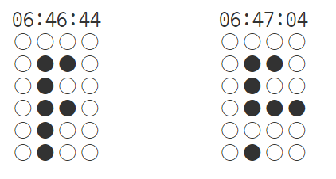

"rt11-ex3.BinaryClock컴포넌트" 이나 "rt12-13.ElectronClock"을 참고하여
함수 컴포넌트를 사용하여 이진 시계를 완성한다.
바이너리 시계의 원리
11:03:49 ==> 110349
1 ==> 0001
1 ==> 0001
0 ==> 0000
3 ==> 0011
4 ==> 0100
9 ==> 1001
1. 함수 컴포넌트 만드는 방법을 학습한다.
컴포넌트명: BinaryClock
